Puente Alto · veterinaria
¿Cómo traigo al gato?
193 reseñas en Google y una consulta en Av. Los Toros. Cinco pasos para que llegue tranquilo.
- 193reseñas en Google
- 5pasos para traer al gato
- 1llamada antes de salir
- 0páginas propias: la dirección está en directorios
Sin que sea una batalla
Cómo traer al gato
Lo que más ayuda es la costumbre, y empieza días antes.
La transportadora, días antes
Abierta en la casa, como un mueble más.
Una manta con su olor
Adentro, para que reconozca el lugar.
Tapada en el trayecto
Con un paño liviano: ve menos y se calma.
En auto, no en brazos
La transportadora, firme en el asiento.
Al llegar, avisa
Si la sala está llena, espera en el auto.
Llama antes de salir y cuenta que vienes con gato.
Llamar al (2) 2295 3782Es una guía general: si tu gato necesita algo más, lo decide el veterinario en la consulta.
Un gato tranquilo se revisa mejor.
A quién atienden
Perros, gatos y los chicos
-
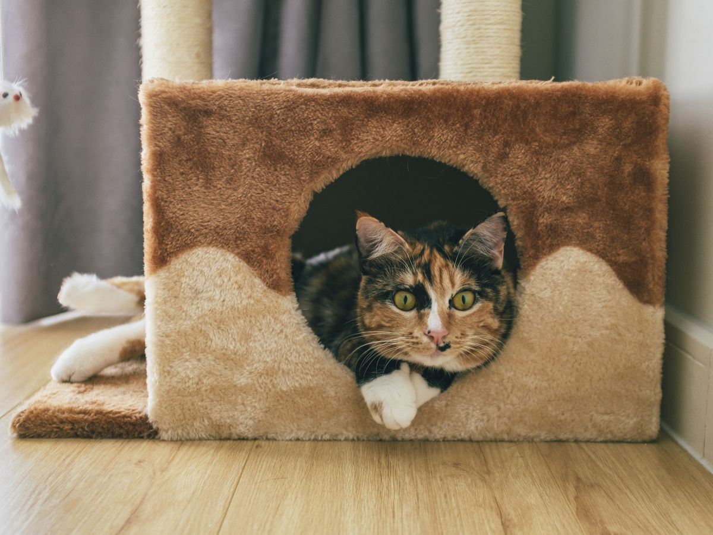
Gatos
Con su transportadora
Y con los cinco pasos de arriba.
-
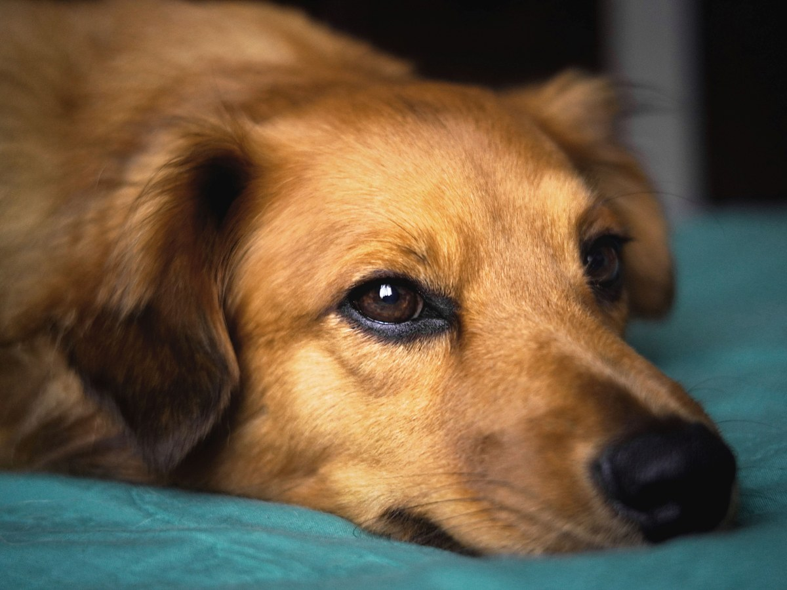
Perros
Consulta y control
Con correa, en la sala.
-
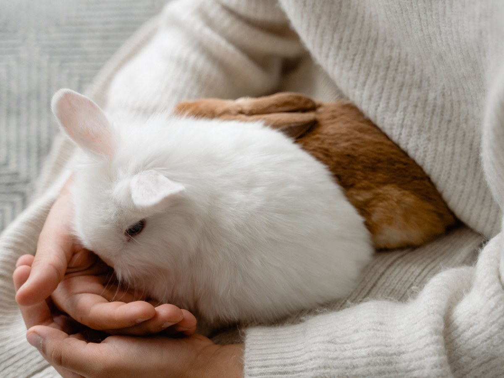
Conejos
También se atienden
En su caja, con heno.
-
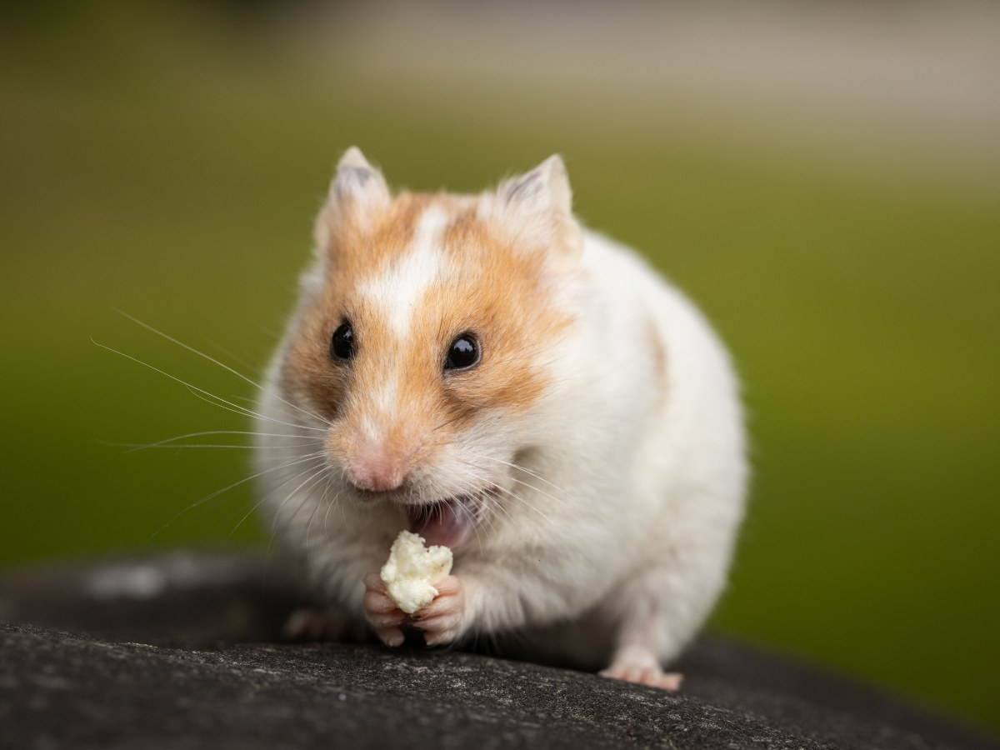
Hámsters y cuyes
Los más chicos
Con su jaula o una caja.
-
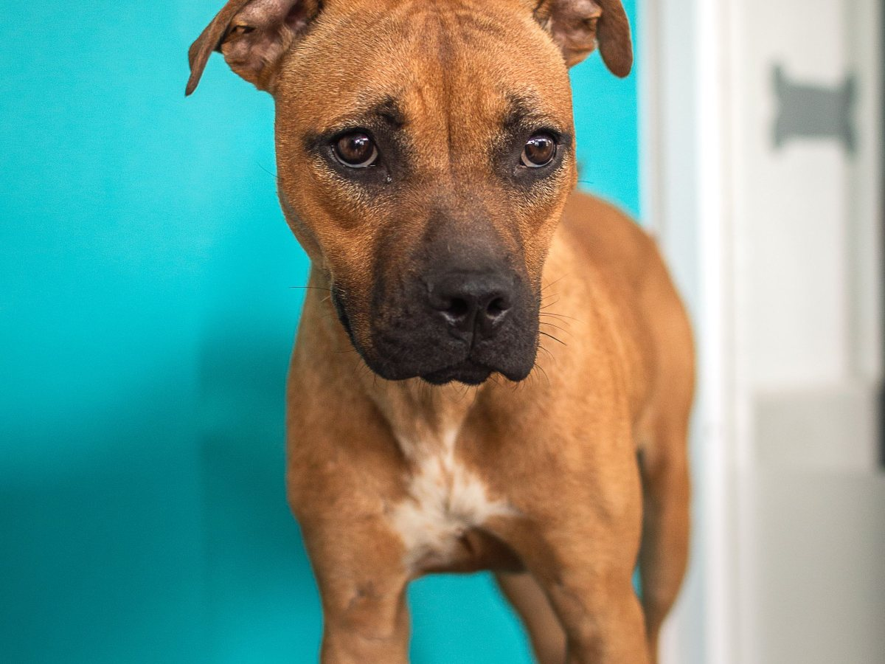
Peluquería
Baño y corte
Para perros.
-

Consulta
Exámenes y esterilización
Se agendan por teléfono.
Según directorios públicos: lo confirma la veterinaria.
Ciento noventa y tres reseñas, y cómo preparar la visita no está escrito en ninguna parte.
Google, al 27-08-2026
La sala de espera
Los que llegan
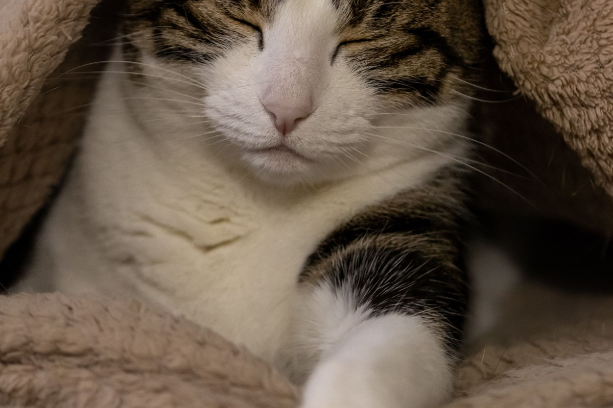
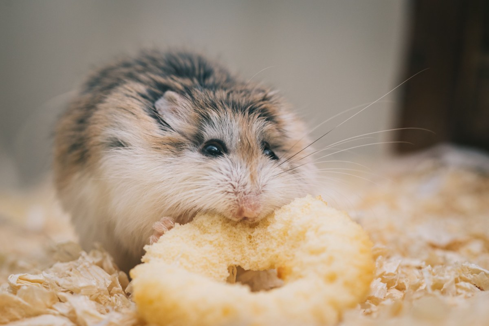
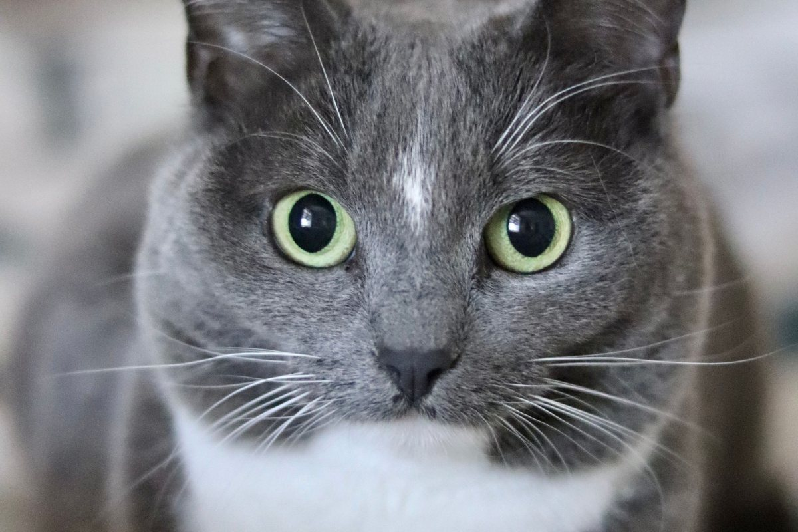
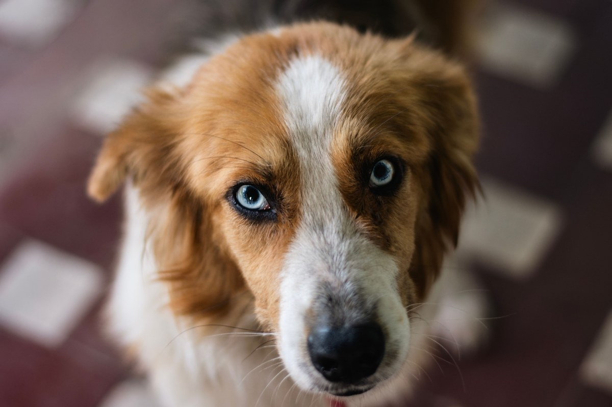
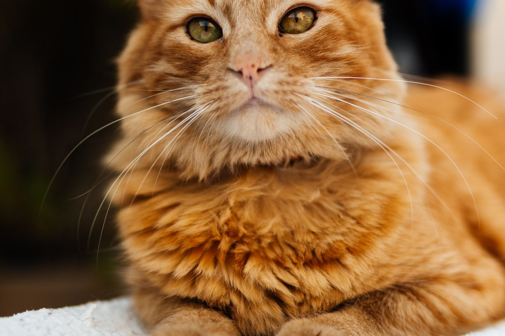
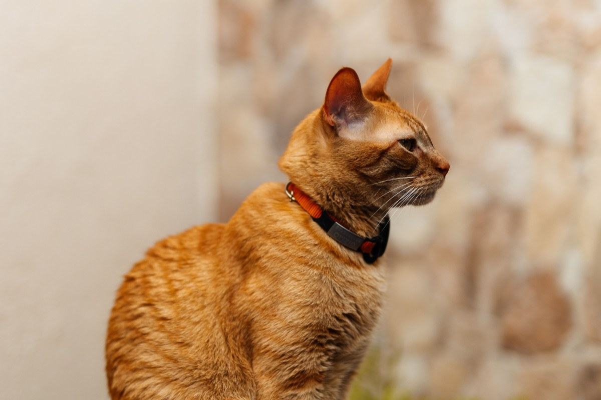
Fotos de referencia: ninguna es de la veterinaria.
Dónde está
En Av. Los Toros
- Dirección
- Av. Los Toros 01269, Puente Alto
- Teléfono
- (2) 2295 3782
- @vet_animalitos_puente.alto
El horario y los servicios no están en una página propia: hoy se pregunta llamando.
Av. Los Toros 01269 Abrir en Google Maps
Para Veterinaria Animalitos
Qué es real y qué falta
Lo verificado
Las 193 reseñas, la dirección en Av. Los Toros, el teléfono y el Instagram.
Lo de ejemplo
Los cinco pasos, a quién atienden y todas las fotos. La nota de Google no se muestra.
Lo que falta
Una página que prepare la visita. El gato que llega tranquilo se revisa mejor, y el dueño vuelve.